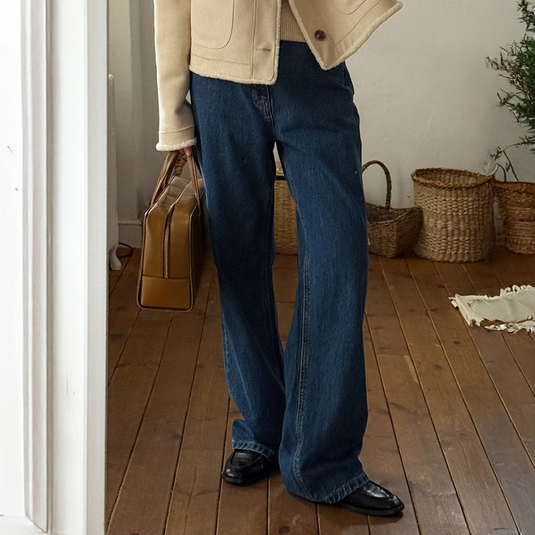
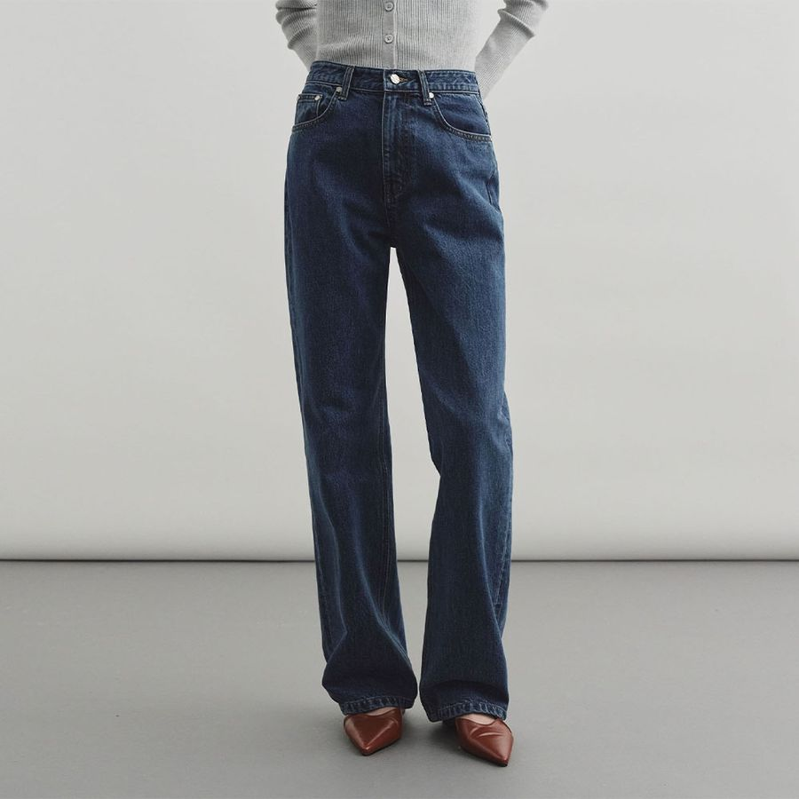
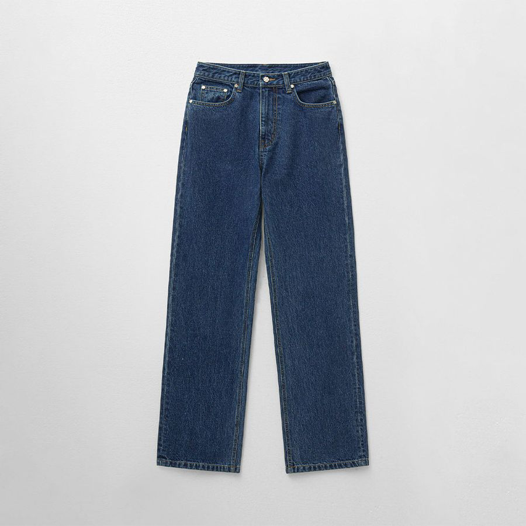

사계절 캐주얼 · 29CM · 2026.11.10 판매가
사계절 캐주얼, 데일리로 돌려 입는 팬츠 두 벌
계절 상관없이 데일리로 돌려 입는 캐주얼 아이템을 모아 두는 페이지예요. 첫 아이템은 마조네 스트레이트 코튼 팬츠예요. 워시드 가공한 톤다운 퍼플이라 무채색 대신 쓰기 좋다는 후기가 있어요.


마조네 상품 사진 · 스트라이프 니트 / 옐로 스카프 / 아이보리 재킷 / 제품 앞면
마조네 MA JOURNÉE
STRAIGHT COTTON PANTS_PURPLE
면 100%스트레이트 핏S·M후기 3개 · 찜 4792026년 9월 제조
정가112,000원
판매가28%80,640원
쿠폰 적용가35%72,580원
무신사 삼성카드 결제 시42,580원
| 치수(cm) | S | M |
|---|---|---|
| 총장 | 103 | 104 |
| 허리단면 | 35 | 37.5 |
| 엉덩이단면 | 49 | 51.5 |
| 허벅지단면 | 31 | 33 |
| 밑위 | 28 | 29 |
| 밑단단면 | 24 | 25 |
S 추천. 허리 35cm는 잘 맞는 무탠 플레어 25(35.25cm)와 거의 같아요. 인심(총장−밑위)은 75cm로, 플레어(77cm)보다 2cm 짧고 시야쥬 바지(72cm)보다 3cm 길어요. 플랫 슈즈보다는 굽 있는 신발이 안전해요.
29CM에서 보기 ↗후기와 체크 포인트
후기 (3개)
- 159cm·56kg S "사이즈 잘 맞고 소재가 부들부들 매끈"
- 156cm·54kg M "워시드 컬러와 소재가 좋고, 톤다운 퍼플이라 무채색 대신 쓰기 좋다"
- 질감이 따뜻해서 한겨울에도 내복과 함께 가능하다는 평
봄웜톤 컬러 팁
- 퍼플은 원래 쿨톤 색이에요. 이 제품은 붉은 기가 도는 톤다운 플럼이라 얼굴에서 먼 하의로 입으면 부담이 적어요
- 얼굴 가까이엔 크림·버터·카멜 같은 따뜻한 색을 두세요
- 모델처럼 옐로 스카프를 더하면 웜톤 포인트가 돼요
소재·관리
- 면 100% 탄탄한 조직감, 드라이클리닝 권장
- 사계절 데일리. 한여름엔 다소 더울 수 있어요
- 후기가 아직 3개뿐이라 핏 정보가 적어요
사계절 코디 공식




몽돌 상품 사진 · 그레이 카디건 / 베이지 재킷 + 로퍼 / 정면 / 제품
몽돌 MONGDOL
[Premium] 스트레이트 데님 진 딥블루
면 100%스트레이트 핏S·M·L후기 245개 · 찜 7.9천무료배송
정가99,000원
판매가54%45,690원
| 치수(cm) | S | M |
|---|---|---|
| 총장 | 104 | 106 |
| 허리단면 | 36.5 | 38.5 |
| 엉덩이단면 | 50 | 52 |
| 허벅지단면 | 30.5 | 31 |
| 밑위 | 29 | 29.5 |
| 밑단단면 | 23 | 23.5 |
S 추천. 인심(총장−밑위)이 75cm라 발등을 덮는 기장이에요. 허리 36.5cm로 플레어 25(35.25cm)보다 1cm쯤 여유 있어요 — 후기에도 "S가 편안하게 맞는다", "허리가 살짝 커서 수선"이 섞여 있어요.
29CM에서 보기 ↗데님 후기와 코디
후기 요약 (245개)
- 159~166cm S "잘 맞아요"가 대부분, 160cm대는 기장 수선 없이 입었다는 후기
- "도톰해서 겨울까지" — 사계절 중 봄·가을·겨울에 특히 좋아요
- ⚠️ 허리 단추 구멍이 작아 잠그기 힘들다는 후기가 여러 개 있어요
봄웜톤 컬러 팁
- 진청(딥블루)은 쿨한 색이라 위에 크림·카멜·베이지를 두면 얼굴이 환해요
- 사진처럼 베이지 재킷 + 브라운 로퍼가 가장 안전한 조합
가격은 2026.11.10 29CM 기준이에요(쿠폰은 계정마다 다를 수 있어요). 재고는 상품 페이지에서 다시 확인해 주세요.